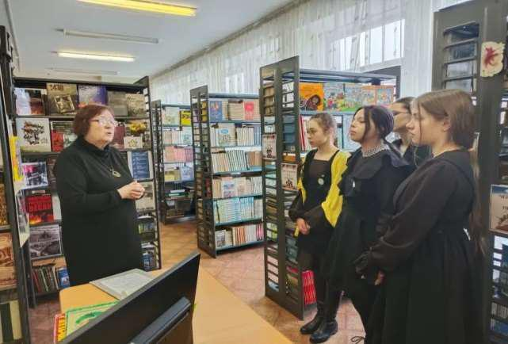
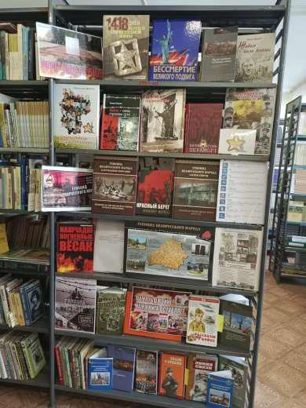

ГЕНОЦИД БЕЛОРУССКОГО НАРОДА
10 февраля в библиотеке у выставки «Геноцид белорусского народа в годы Великой Отечественной войны» был проведён информационный час на тему «Угон населения на принудительные работы». На мероприятии присутствовали учащиеся 10 «В» класса.

В ходе беседы ребята узнали, что за годы Великой Отечественной войны с территории Беларуси было угнано на принудительные работы около 400 тыс. человек, из которых на Родину вернулось только около 223 тыс.
Эти цифры – не просто статистика, а свидетельство огромной трагедии, которая затронула практически каждую белорусскую семью.
Информационный час стал еще одним шагом в воспитании патриотизма и уважения к истории своей страны. Такие обсуждения помогают сохранить память о трагических событиях и не допустить их повторения в будущем.

Геноцид не имеет срока давности, о нём нельзя забывать!